Scratch（スクラッチ）は、MITメディア・ラボ・ライフロング・キンダーガーデン・グループ（MIT Media Lab Lifelong Kindergarten Group）のプロジェクトです。http://scratch.mit.eduをご覧ください。
目次
はじめに
GO:KEYS ScratchX Extensionを使用すると、ローランド GO:KEYSをScratchX（*）からコントロールすることができます。
たとえば、GO:KEYSのループ・フレーズ（パターン）をプログラミングしたり、リズムにあわせてキャラクターを動かしたり、鍵盤を弾く動作に連動したインタラクティブなアニメーションを作ったりすることができます。
*ScratchXは、実験的な拡張機能（Extension）が体験できるScratchのプラットフォームです。詳しくはこちらをご覧ください。
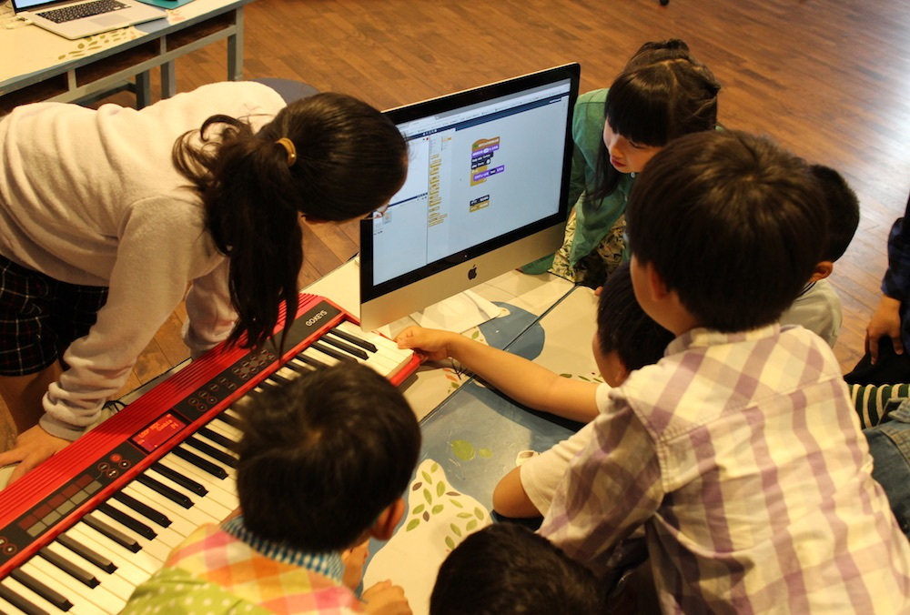
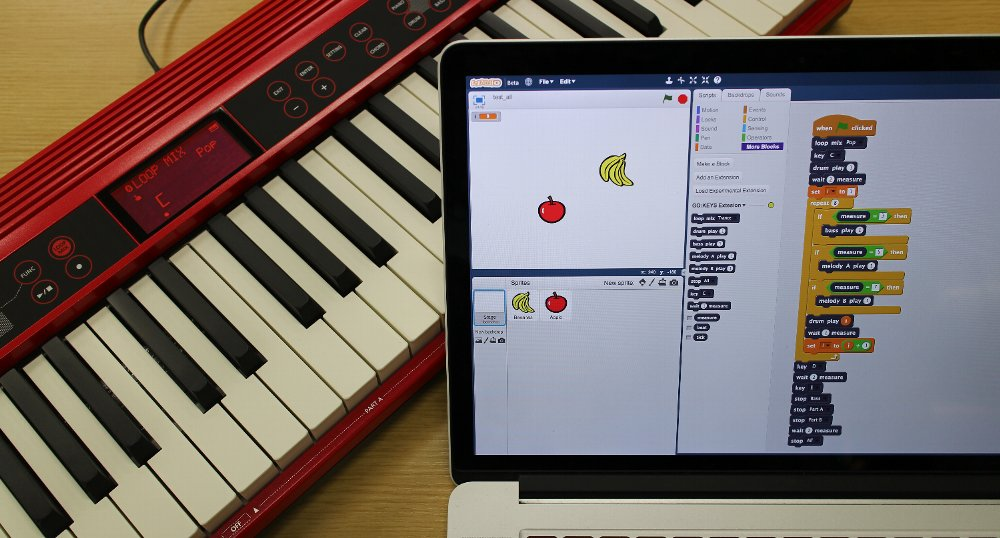
用意するもの
- GO:KEYS
- マイクロUSBケーブル（*）
- パソコン（Win/Mac）
*充電専用のマイクロUSBケーブルは使用しないでください。データ通信ができません。
クイック・スタート
- GO:KEYSを最新版にアップデートします（Ver.1.20以上）。
- 最新のGoogle Chromeをパソコンにインストールします。
- 最新のAdobe Flash Playerをパソコンにインストールします。バージョンは「FP** for opera and chromeium-PPAPI」を選びます。
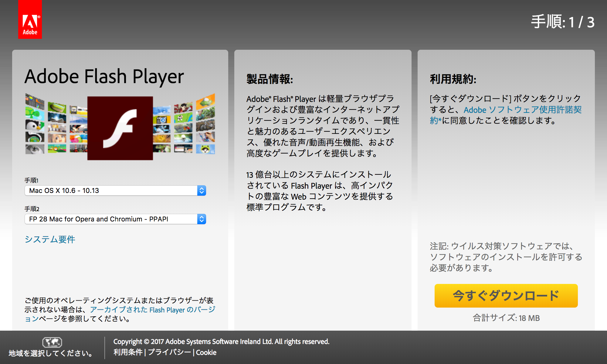
- Google ChromeからScratchXのサイトにアクセスし、Adobe Flashを許可します。
- アドレス・バー左側にある「i」をクリックします。
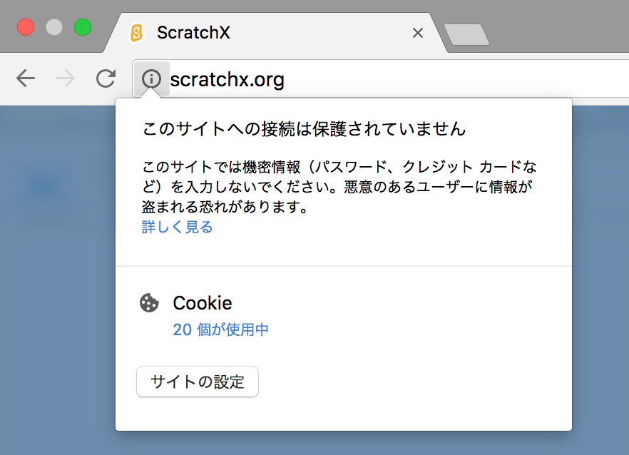 - 「サイトの設定」をクリックします。設定ページが開きます。
- 「Flash」の項目で「許可」を選択し、設定ページを閉じます。
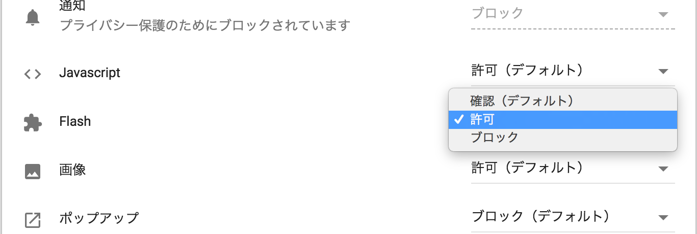
- アドレス・バー左側にある「i」をクリックします。
- GO:KEYSとパソコンをマイクロUSBケーブルで接続します。
- GO:KEYSの電源を入れます。
- Google Chromeからこちらにアクセスします。
または、ScratchXのサイトに以下のURLを直接入力することで、GO:KEYS ScratchX Extensionを読み込むこともできます。
https://rolandcom.github.io/gokeys-scratch-extension/gokeys_extension.js
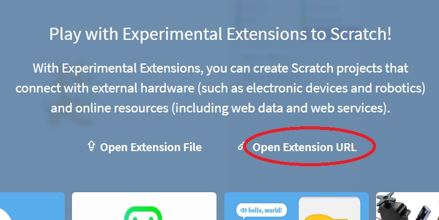
GO:KEYS ScratchX Extensionが読み込まれ、以下の画面が表示されます。
環境によっては読み込みに数十秒かかることがあります。
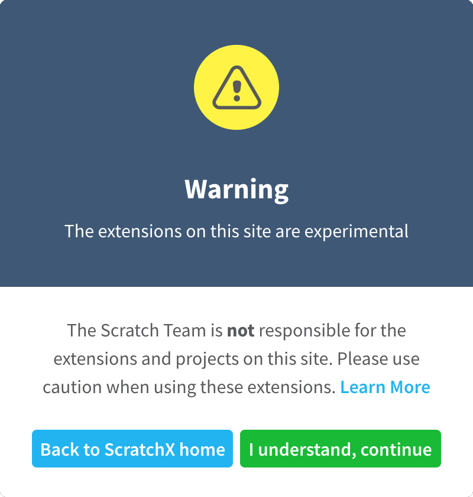
- 内容を確認し、「I understand, continue」をクリックします。
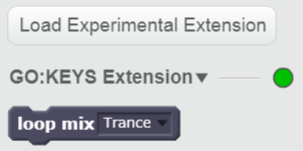
［More Blocks］タブにある丸印が緑色になれば準備完了です。
- 緑色にならない場合、マイクロUSBケーブルを挿し直すか、Google Chromeを再起動すると改善することがあります。
ブロック
GO:KEYS用に拡張されたブロックを解説します。
ループ・ミックス・セットが選ばれます。
選択したパートのパターンが再生されます。1～11の数値を設定すると、パターン番号を指定することができます。
パターンが止まります。停止するパートを指定することもできます。

ループ・パターンのキーを指定します。
小節数を指定して、待ち（小節数）を入れます。
小節数を表す変数です。
拍を表す変数です。
Tick（音符の長さや位置の細かさ）を表す変数です。
※TPQN（Ticks Per Quarter Note）は24です。
GO:KEYSの鍵盤入力を受けます。
指定した音階の鍵盤入力を受けます。
音階を表す変数です。音階に応じて1～12の範囲で変化します。
音の強さを表す変数です。音の強さに応じて0～100の範囲で変化します。
サンプル・ソース
- サンプル1
- GO:KEYSの鍵盤を弾くとアニメーションが動きます。
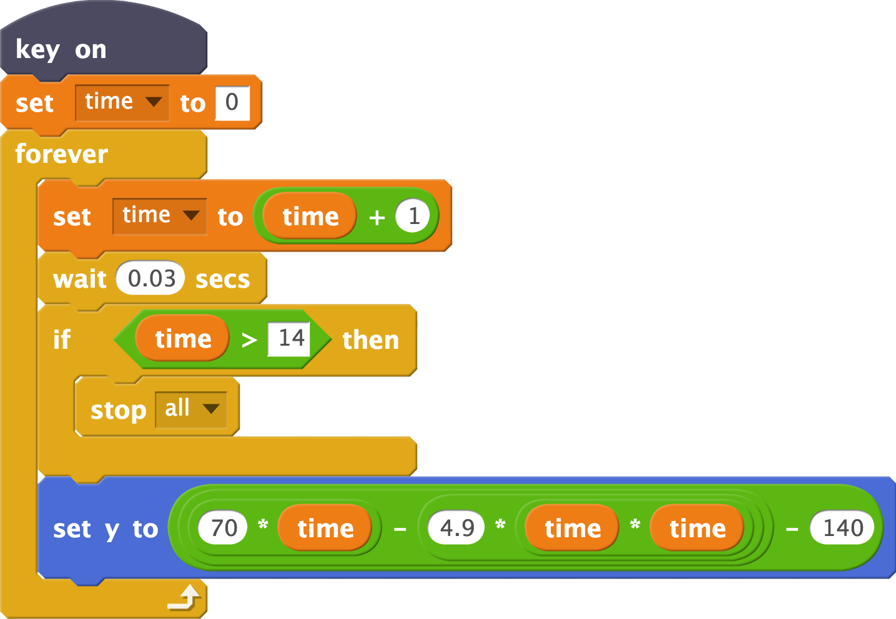
- サンプル2
- ドラム・パターンを8小節再生させます。1小節毎に再生させるパターンを変えています。
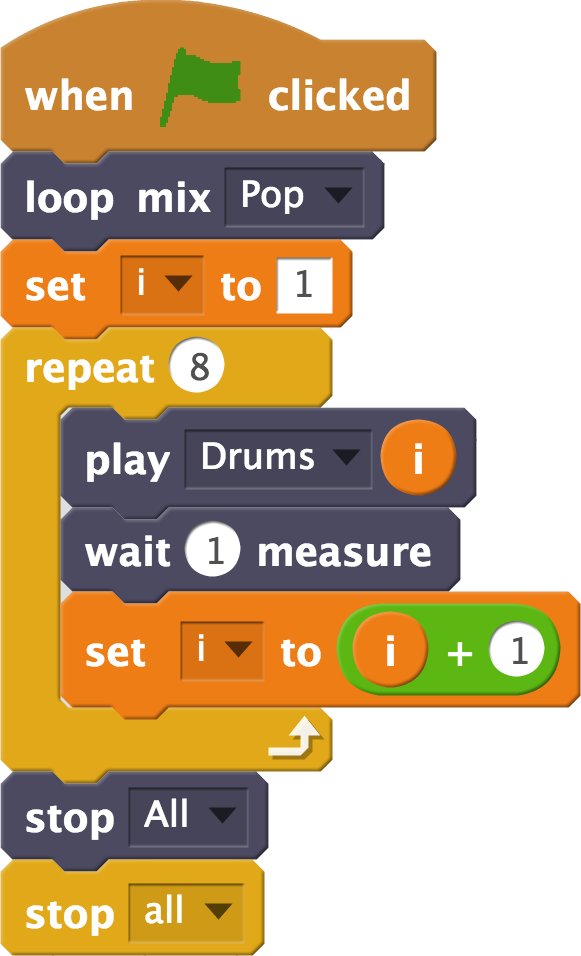 - サンプル3
- ドラム・パターンの拍に合わせてアニメーションが動きます。
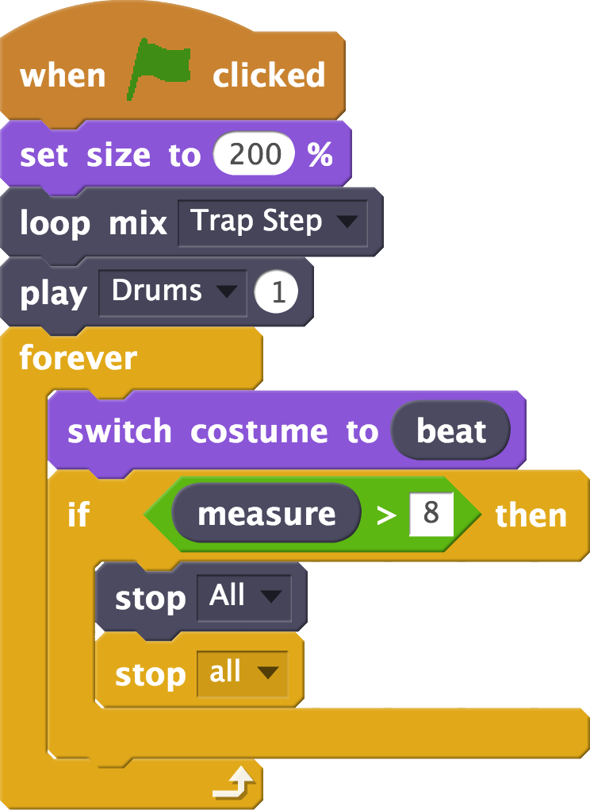
- サンプル4
- プログラミングで曲を作ります。曲の途中からベースやメロディーが鳴り始めたり、キーが変わったりします。
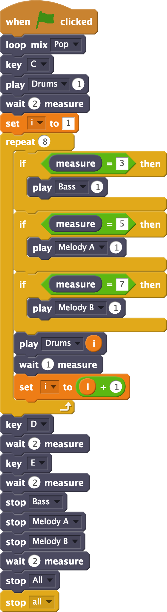
GO:KEYS ScratchX Extension（ソース・コード）には、ウェブの技術であるWeb MIDI APIを使用しています。詳しくはこちらをご覧ください。